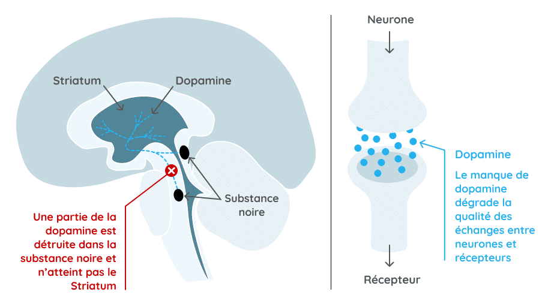

1) Ce qui se passe (explication simple)

Dans Parkinson, certaines zones du cerveau produisent moins de dopamine. La dopamine aide à contrôler les mouvements. Quand elle baisse, les gestes deviennent plus lents, plus raides, et certains tremblements peuvent apparaître.
2) Les signes typiques
Signes moteurs
- Lenteur des mouvements (gestes moins rapides, écriture plus petite).
- Rigidité (raideur, douleurs, gêne).
- Tremblement souvent au repos (pas toujours présent).
- Instabilité et chutes (souvent plus tardives).
Signes non moteurs
- Troubles du sommeil (sommeil agité, somnolence).
- Constipation, troubles urinaires.
- Anxiété, dépression.
- Perte d’odorat, fatigue.

Attention : un tremblement n’est pas forcément Parkinson. Le diagnostic repose sur un examen clinique neurologique.
3) Diagnostic
- Examen clinique neurologique : essentiel.
- Imagerie : parfois utile pour éliminer d’autres causes (selon le contexte).
- Suivi : évolution dans le temps et réponse aux traitements.
4) Traitements et prise en charge
- Médicaments : améliorent les symptômes (ajustements progressifs).
- Rééducation : kinésithérapie, orthophonie, ergothérapie.
- Activité physique : bénéfice important sur mobilité, équilibre, fatigue.
- Soutien : sommeil, nutrition, accompagnement psychologique si besoin.
Idée à retenir : la prise en charge est globale : médicaments + rééducation + activité régulière.